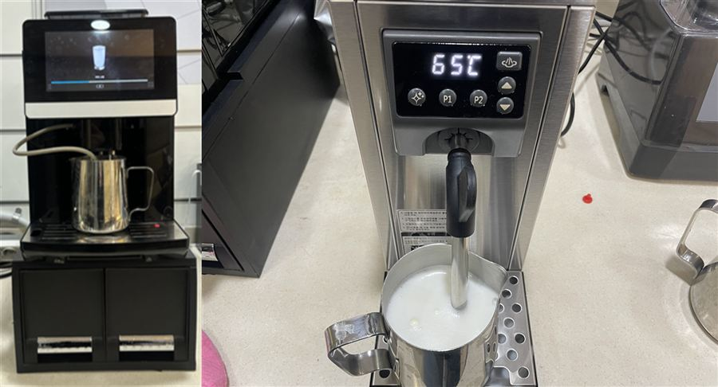
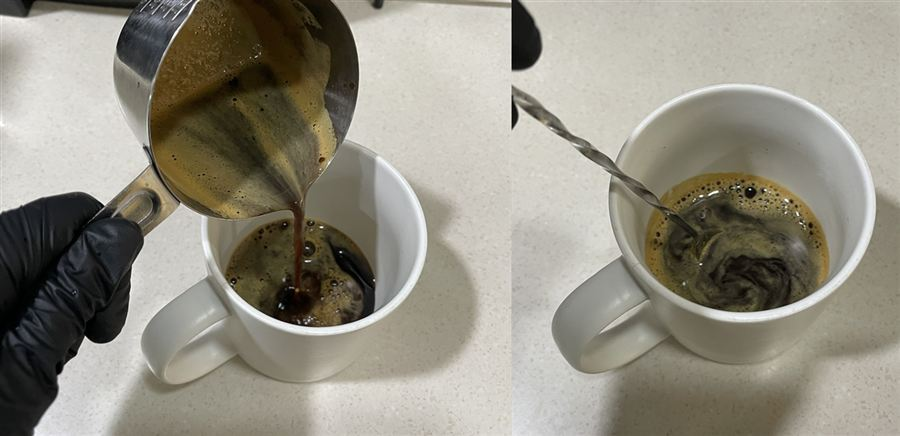
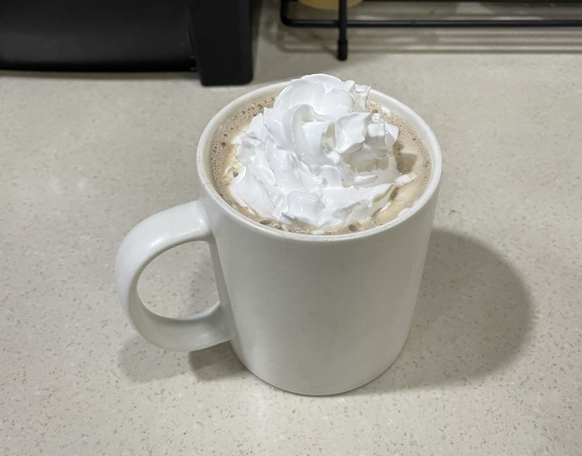

| 메뉴명 | 카페모카 HOT |
|---|---|
| 판매가격 | 5,500원 |
| 원재료 | 에스프레소샷, 초코소스, 우유, 휘핑크림 |
| 사용 부자재 | 13oz 머그컵 또는 종이컵, 리드뚜껑, 홀더 |
※ 픽업 멘트 : "뜨거우니 조심하세요"
제조방법

1
더블에스프레소 버튼을 눌러 에스프레소 2샷을 추출한다.
※추출량 : 60ml(30ml*2)
더블에스프레소 버튼을 눌러 에스프레소 2샷을 추출한다.
※추출량 : 60ml(30ml*2)

2
머그컵에 초코소스 2펌프(70g)를 넣는다.
머그컵에 초코소스 2펌프(70g)를 넣는다.

3
피쳐에 찬우유 220g을 담고 커피머신 스팀기 또는 WPM 스팀기로 스팀 우유를 만든다.
(※우유스팀 p.16, p23 참고)(※뜨거우니 주의할 것!)
피쳐에 찬우유 220g을 담고 커피머신 스팀기 또는 WPM 스팀기로 스팀 우유를 만든다.
(※우유스팀 p.16, p23 참고)(※뜨거우니 주의할 것!)

4
추출한 에스프레소 2샷을 넣고 초코소스를 섞어준다.
추출한 에스프레소 2샷을 넣고 초코소스를 섞어준다.

5
스팀우유를 컵 윗면에서 2cm아래까지 부어준다.
(*생크림을 짜기 위해 가득 담지 않기)
스팀우유를 컵 윗면에서 2cm아래까지 부어준다.
(*생크림을 짜기 위해 가득 담지 않기)

6
휘핑크림 3바퀴(25g)를 돌려 올려준다.
휘핑크림 3바퀴(25g)를 돌려 올려준다.

7
완성!!
완성!!
※ 휘핑크림 제외 시, 스팀우유를 담은 뒤 우유폼 위에 올려 완성한다.